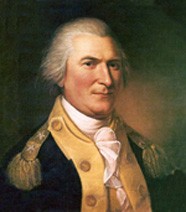
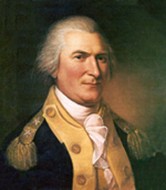

Gen. Arthur St.Clair, an early Westmoreland resident. By Charles Willson Peale - File:ArthurStClairOfficialPortrait.jpg, Public Domain.

Derry Station, Westmoreland County, Pennsylvania in 1900. By T. M. Fowler & James B. Moyer, Morrisville, PA 1900 [Public domain], via Wikimedia Commons
Author
John McDowell roams the world in search of wild and beautiful women. This site was created as a resource to assist in the exploration of Westmoreland County, Pennsylvania history, culture and demographics, a career research project. The references used for this site are listed below.
Title: "American Nations: A History of the Eleven Rival Regional Cultures in North America"
Title: "History of Westmoreland County, Pennsylvania"
Title: "The Early Migration To Westmoreland County, PA"
Title: Westmoreland County Genealogy Project
Title: "Westmoreland County, Pennsylvania History and Genealogy"
Title: "William Penn: The Founding of the Quaker colony of West Jersey"

Gen. Arthur St.Clair, an early Westmoreland resident. By Charles Willson Peale - File:ArthurStClairOfficialPortrait.jpg, Public Domain.